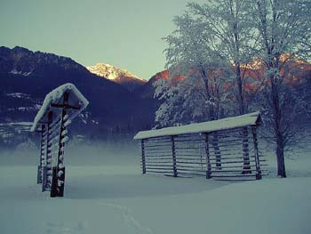
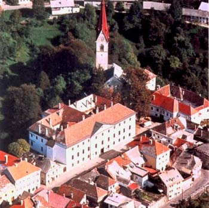

Slovenačke varoši i druge sitnice
Gost post: Zdravko Ranković
U severoistočnoj Sloveniji, negde na putu od Maribora prema Murskoj Soboti, nas četiri novinska urednika iz Srbije zanoćili smo, po preporuci iz jedne otmene (ponavljam: otmene) drumske krčme, u pansionu «Petelin». Značenje tog naziva postalo je jasno kad smo se našli pred tim zdanjem: u sklopu istaknute firme bio je ucrtan – PETAO. Nošen utiscima od prethodnoga dana razbudio sam se pre svanuća. Za vreme te nesanice kukurikanjem se odnekud pet puta oglasio petao saopštavajući koliko je sati iza ponoći. Verovatno da je u šest sati ta elektronska naprava kukuriknula šest puta; mene je, pak, u međuvremenu pohodio kakav-takav san.
Na mnogobrojne primere slovenačkog osećanja za sitnice («koje život znače») nailazili smo na svim stranama Slovenije. U te sitnice valja ubrojati i nevelike tegle sa džemom, spremljenim u domaćoj radinosti, koji prodaju u onoj otmenoj drumskoj krčmi. I odlično domaćinovo vino što ga tamo popismo. Dakako, i do savršenstva uređen okolni prostor. Treba li reći i to da je okruženje te krčme besprekorno čisto iako je ona uz put kojim neprekidno tutnje ogromni kamioni i mnogi drugi četvorotočkaši.
A iz davnih odlazaka u tu zemlju u pamćenje su se, između ostaloga, urezale i klupe uz šumske staze za šetanje. I uz puteljke kojima se pešači kroz livade. Imalo ih je, i još ih ima, ne samo uz puteljke kojima se hoda po okolini znatnijih turističkih mesta već i po predelima za koje bi se reklo da su zabačeni. Uz svaku je, onda ali i sada, i korpa za otpatke. Koju neko uredno prazni, ma gde se te klupe i te korpe nalazile.
Gotovo sasvim su, međutim, nestali tzv. kozolci, nekada razastrti po čitavoj Sloveniji. Jedino po njoj, bar kad su u pitanju nekadašnji jugoslovenski prostori. (Reč je o napravama od drveta ili u kombinaciji drvo-beton na kojima se tamo sušila pokošena livadska trava.) Gotovo da nije bilo razglednice niti slikanog pejzaža a da se na njima nije našlo mesta i za te nevelike «građevine». U međuvremenu je preovladalo mašinsko pakovanje poluosušene trave u valjakaste bale, obložene plastičnim folijama i podvrgnute vakumiranju. Time je, u proteklih deceniju i po, koliko je trajalo moje neidenje u Sloveniju, skoro sasvim prestala potreba za kozolcima. Odveć proređene sad ih najčešće koriste kao pomalo neobične nosače za reklamne panoe.

Ova urednička četvorka će po lepom pamtiti noćenje u još jednom tamošnjem pansionu. Zove se jednostavno «Kovač», nalazi se u Radovljici. Svega četiri ili pet kilometara udaljen je od Bledskog jezera (oko četrdeset od Ljubljane), odmaknut je od glavnoga puta, u Langusovoj je ulici kojom prođe tek poneko putničko vozilo. Sasvim delim osećanje svojih saputnika da nam je tu po svemu bilo prijatnije, udobnije itd. nego u opatijskom hotelu sa pet zvezdica (gde je prenoćište tri puta skuplje). Kad god ubuduće budem odlazio u slovenačku zemlju, nastojaću da noćim u malovaroškim pansionima. Znatno niža cena toga počinka nije jedini razlog.
Inače, kad sam sredinom šezdesetih godina počeo da odlazim u Sloveniju, osim marljivosti njenih ljudi, njihovog osećanja za red i privrženosti prirodi, u drugom pogledu gotovo da nije bila ispred Srbije. I tamo se onda živelo odveć skromno. Mojstrana, po veličini približna mojoj Mionici, imala je među svojim žiteljima manje studenata nego li varošica uz koju sam odrastao. Poznavao sam porodicu sa osmoro (ili je bilo devetoro) dece, što je za naše prilike već bilo neverovatno. A moji prijatelji iz Jesenica, obrazovani i solidno situirani ljudi, nastanjeni u stambenoj višespratnici, sve do sedamdesetih godina vodu u bojleru su loženjem zagrevali što je onda, bar u Valjevu, bilo nezamislivo. Itd.
Razlika se, na moju žalost, neprestano uvećavala u njihovu (slovenačku) korist. Sredinom šezdesetih, da spomenem i taj primer, Kranjska Gora je imala svega dva hotela, a kad sam u njoj ponovo bio 1972. za nabrajanje već trebala dvocifrena brojka. Rado bih, i to što skorije, opet išao u Kranjsku Goru; nisam je video pune dve decenije.
Razlika između Slovenije i moje zemlje Srbije u drugoj polovini prve decenije 21. stoleća tolika je, što je na svakom koraku i očigledno, da mi se čini nedostižnom. Voleo bih, strašno bih voleo da nisam u pravu.
***
 RSS feed
RSS feed
 sadržaji se objavljuju pod
sadržaji se objavljuju pod
Komentari
Sjajno napisano.
kiko | 09.10.07 20:30
Bila sam u Sloveniji pre punih 17 godina. I tada su bili daleeeko ispred nas. A mogu misliti gde su sada.
elektrokuhinja | 10.10.07 05:51
pozdrav za g.Rankovica... kad pise "stara" garda uvek ima secanja koja daju sire shvatanje svega
tekton | 10.10.07 10:57
Kozolci su i meni ostali u secanju kao jako upecatljiva slika iz Slovenije, mada sam tek iz ovog bloga naucio kako se te naprave zovu. Stvarno steta sto nestaju...
ubipacijentic | 10.10.07 16:28
Pohvaliću ovaj sjajan post, i putopis, ali sve moje čestitke idu izbor muzike za danas!
etotako | 10.10.07 21:15
Sjajan post. Bas bi volela da posetim Sloveniju, ne samo Ljubljanu, nego da je malo proputujem, bas zbog lepih stvari napisanim u ovom tekstu.
what the fuck | 12.10.07 08:07
Ja sam vidjala ove bojlere koji se greju na vatricu i u stanovima u Budimpesti i Varsavi, u starim zgradama. To valjda ima neke veze za sredjevropskom praksom gradnje
la lara | 12.10.07 08:20